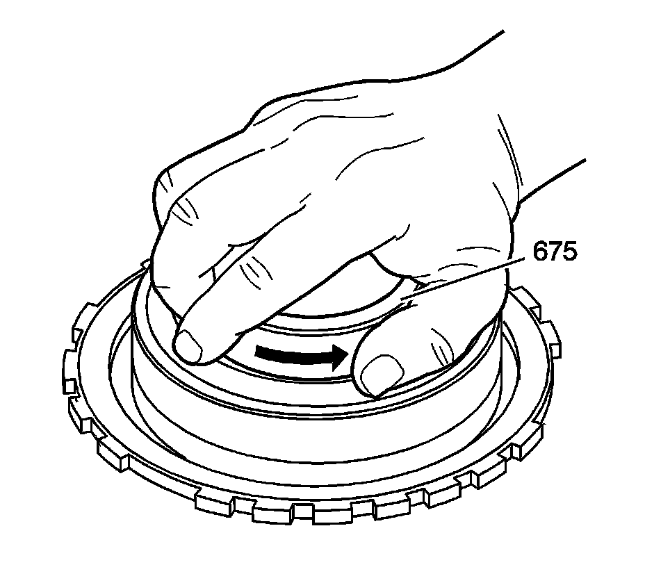
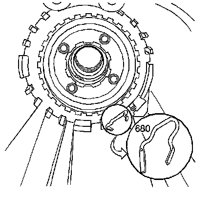
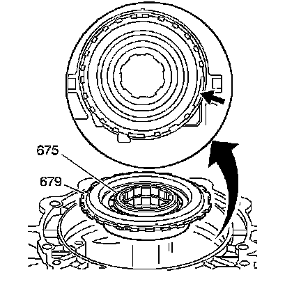
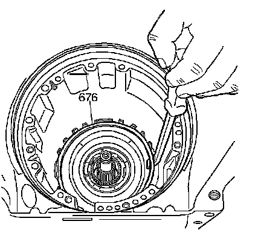

Low and Reverse Clutch Support Installation
Low and Reverse Clutch Support Installation

1. Install the low and reverse roller clutch race (675). Simultaneously, turn and insert the race.
2. Rotate the race in order to verify proper operation. The race should only rotate in one direction.

3. Install the low and reverse clutch support retainer spring (680) into the case.

Important: Align the wide low and reverse clutch support notch with the wide case lug.
4. Install the low and reverse clutch support (679), roller clutch and roller clutch race (675) assembly into the case. Position the hub side down during the installation.

Important: Align the opening of the low and reverse clutch support retainer ring (676) with the low and reverse clutch support retainer spring (680). It is important that the low and reverse clutch support retainer ring opening is centered around the retainer spring. This will allow the retainer ring to fully seat in all of the transmission case lugs. If the retainer ring lays up against the retainer spring, the retainer ring will not fully seat. Possible damage to the transmission case lugs can occur if the low and reverse clutch support retainer ring is not fully seated in the transmission case lug.
5. Install the low and reverse support retainer ring (676) into the case.